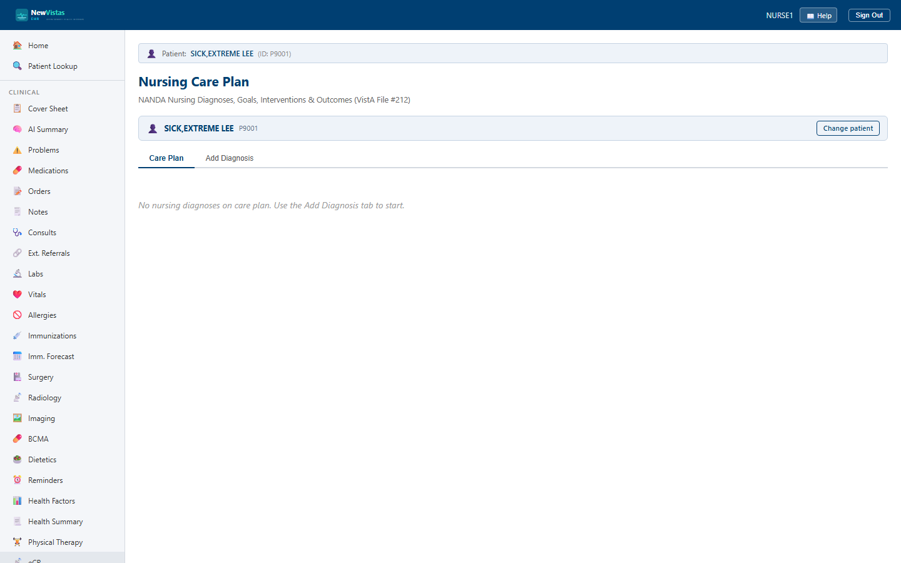

Care Plan
Build and maintain a patient's nursing care plan using NANDA nursing diagnoses, each with its own goals, interventions, and outcome evaluations. This is NewVistas' implementation of the VistA Nursing Care Plan (File #212).
Open the Care Plan screen
- Go to
/nursing-careplan. - In the Patient Bar at the top, enter the patient ID and click Load.
- The Care Plan tab opens. If nothing is on file it reads "No nursing diagnoses on care plan. Use the Add Diagnosis tab to start."

What you see
The screen has two tabs: Care Plan and Add Diagnosis.
Care Plan tab
- One card per nursing diagnosis, with its Related To (R/T) etiology, As Evidenced By (AEB) characteristics, status tag, priority, and created date.
- Two side-by-side columns — Goals and Interventions — each listing the active items, with the intervention frequency shown in parentheses (e.g.
PRN). - An Outcome Evaluations table appears once evaluations exist, showing date, evaluator, rating, and notes.
- A Resolve Diagnosis button shows on each active diagnosis.
Add Diagnosis tab
- Nursing Diagnosis (required, e.g.
Acute Pain), Related To (etiology), and As Evidenced By (defining characteristics). - Click Add to Care Plan to save; the new diagnosis appears as a card on the Care Plan tab.
Add goals and interventions
- On the Care Plan tab, find the diagnosis card you want to expand.
- Under Goals, type a goal in the "New goal..." box and click Add.
- Under Interventions, type the intervention, an optional frequency in the small "Freq" box, and click Add.
Resolve, don't delete
When a diagnosis is met, click Resolve Diagnosis rather than
removing it. The diagnosis stays on the record with a resolved status, so
the care-plan history and outcome evaluations remain intact for audit and
handoff.
Write goals to match interventions
Keep each diagnosis self-contained: every goal should have at least one
intervention that drives toward it, and an outcome evaluation that records
the rating. That structure makes the plan easy to evaluate at shift change.